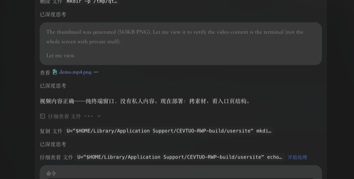

看完一部，片名丢进来就记好了
在 Tuna 里输入一个模糊的片名 —— 剩下的豆瓣查询、海报下载、 Notion 建条，全部自动完成。
需要已安装 Tuna 并开启 设置 → 通用 → 允许 tuna:// 链接执行命令。
不用 Tuna 也可以直接跑脚本，见下方。
它替你做的六件事
每一条都是实际跑通过的，不是设想。
模糊片名也能命中
沙丘 2021 会按年份消歧；dune 认英文原名；
matrix 也能找到《黑客帝国》。直接贴豆瓣链接或 id:3001114 则跳过搜索。
拿不准就问你，不瞎猜
《沙丘》1984 和 2021 分数并列时，不会随便挑一个，而是把候选列出来（并复制到剪贴板）， 你补个年份再跑一次就精确命中。
海报是真图，不是外链
豆瓣图床有防盗链，外链塞进 Notion 会显示成裂图。这里是把图下载后上传到 Notion，
属性类型是 file，跟你手动粘贴的效果一样。
片名自带豆瓣超链接
条目标题是可点的超链接（等价于在 Notion 里选中文字按 ⌘K），点片名直接跳豆瓣页面。
按你既有的约定填
映射跟着你的库走：NAME 写「中文名 外文名」，time 是分钟数，
Date 是观看日期，NUM 自动取最大值 +1。
OTHER 默认留空 —— 那是写你自己短评的地方。
记到哪个页面随时换
默认写 COOF2026。换一次就记住，之后不用每次再选 —— 除非你主动运行「记录到哪个页面」。
实际长什么样
下面都是真机截图。

OTHER 留空等你写。

跑一遍给你看
真实运行录像，没有剪辑。
从输入片名到 Notion 里出现条目，全程约十几秒。
怎么装
两种用法，任选。Tuna 是给桌面顺手用的，命令行是不依赖任何 App 的兜底。
用 Tuna（推荐）
把两个脚本放进 Tuna 的默认脚本目录 ~/Library/Scripts，Tuna 会自动发现它们：
| 脚本 | 在 Tuna 里叫什么 | 干什么 |
|---|---|---|
coof-movie.py | 记录电影 | 输入片名 → 查豆瓣 → 写 Notion |
coof-notion-page.py | 记录到哪个页面 | 换目标数据库，换一次就记住 |
用法是「片名在前，脚本在后」：
1. 打开 Tuna，按 . 进入 Text Mode，输入片名（如 奥本海默 2023） 2. 按 Tab 到动作栏，选「Send to Script」 3. 按 Tab 到目标栏，选「记录电影」，回车
也可以先复制片名，再对「记录电影」直接回车 —— 脚本收不到参数时会读剪贴板。
⚠️ 别把「记录电影」当第一栏再选 Run with Input：那个动作的第三栏是 「挑一个已存在的输入项」的选择器，不接受现场打的字。
不用 Tuna，直接命令行
只要有 Python 3（macOS 自带 /usr/bin/python3），两个脚本就能独立跑：
chmod +x coof-movie.py coof-notion-page.py ./coof-movie.py 沙丘 2021 # 查 + 写库 ./coof-movie.py --no-notion 沙丘 # 只查，不写库 ./coof-movie.py --no-open 沙丘 # 不自动打开浏览器 ./coof-movie.py --link-titles 148-155 # 给已有条目补标题超链接 ./coof-notion-page.py # 看/换写入的目标页面
第一次用要先接上你自己的 Notion：
./coof-movie.py --set-notion-token <你的集成 token> # 然后把目标页面「连接」给这个集成，再： ./coof-movie.py --notion-schema # 确认能看到字段
字段是怎么映射的
映射在运行时读你数据库的真实结构，按属性名认。COOF 库当前长这样：
| Notion 属性 | 写入内容 |
|---|---|
NAME | 「中文名 外文名」，并做成指向豆瓣的超链接 |
FILM | 固定「影」（剧集写「剧」） |
YEAR | 上映年份 |
time | 片长分钟数 |
Date | 观看日期 = 跑脚本那天 |
NUM | 递增序号，自动取当前最大值 +1 |
COUNTRY / KIND | 制片国家 / 类型（多选） |
POSTER | 豆瓣海报，下载后上传 |
OTHER | 默认不写，留给你自己的短评。想填豆瓣简介：--option fill_other=on |
已知的边界
· 豆瓣没有公开 API，走的是非官方接口。短时间内连续请求十来次会被软性限流 （返回空数组），通常 1–2 分钟自愈。脚本已做请求间隔、失败重试、命中缓存不重复请求。
· 豆瓣改版可能让抓取失效。失效时脚本会明确报错，不会静默写错数据。
· 目前不去重：同一部片连跑两次会有两条记录。
· 海报会占一点 Notion workspace 存储配额，一张几十 KB。